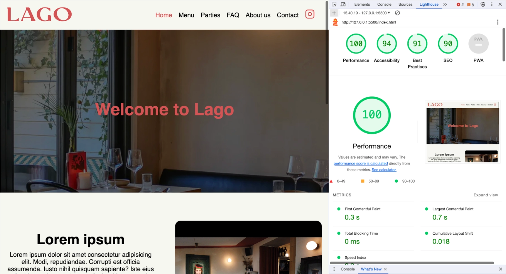
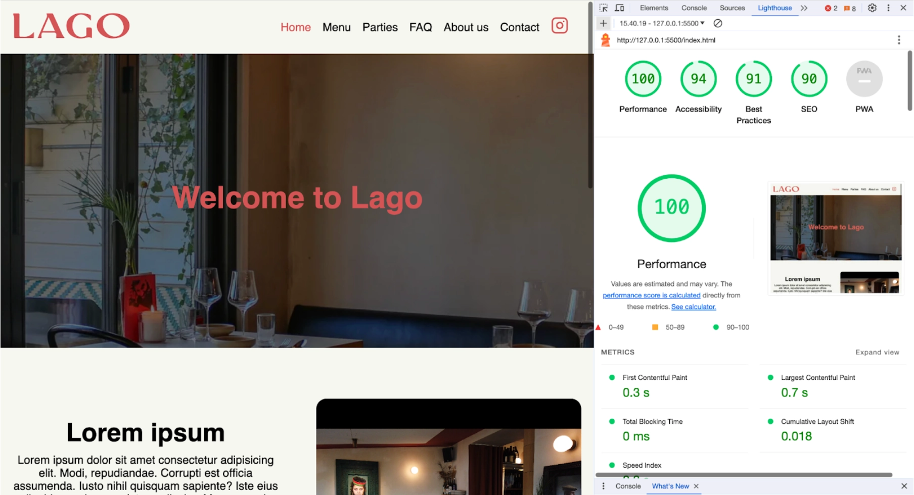

Tema 5 - Grundlæggende Indhold
Formål
Dette tema giver dig en grundlæggende introduktion til videoproduktion, herunder præproduktion, selve optagelsen og postproduktion. Vi bruger smartphonekameraer til optagelse af video og ekstern lyd, samt Premiere Pro og Audition til redigering. Dette er afgørende for at kunne lave mindre video- eller fotoproduktioner selv samt forbedre dine færdigheder til professionel kommunikation med kunder.
Du vil blive introduceret til grundlæggende faglige begreber inden for video- og fotoproduktion. Derudover vil du anvende de færdigheder, du har opnået i det foregående tema, til at redesigne en virksomhedshjemmeside.
Carhartt opgave
I forbindelse med Premiere Pro blev vi præsenteret for en udfordrende opgave, hvor vi modtog flere klip, som lærerne havde skabt. Opgaven var at redigere disse klip sammen og skabe en sammenhængende video på kun 1 minut
Denne øvelse gav os en værdifuld indsigt i klipning og sammensætning af videoklip. Vi lærte teknikker til at bruge biroller til at skjule klippesteder og skabe smidige overgange, hvilket resulterede i en mere flydende og professionel visuel fortælling uden afbrydelser i selve videoen. Dette dybere kendskab til Premiere Pro har styrket vores evner inden for videoredigering og beriget vores forståelse af programmet.
Så fik vi også lært om lower thirds som vi sætter i den nederste tredjedel i videon som tit er navne, stilling, titler mm. og vi sætter det der for ikke at forstyrre hovedoptagelsen
Klipning & lyd
I vores Premiere Pro forløb blev vi tildelt en opgave, hvor vi skulle skabe en video om en person med en passion. Vi valgte at interviewe en musikproducer, der brændte for sin kunst. I indledningen af projektet brugte vi tid på at lære ham at kende og optog en række biroller, mens han arbejdede med beats og musikproduktion.
For at sikre kvalitetslyd anvendte vi en ekstern mikrofon fra Røde under optagelsen, hvilket gav os mulighed for at opnå bedre lydkvalitet end gennem kameraets indbyggede mikrofon eller vores telefoner. Mikrofonen blev fastgjort til ham, og optagelsen blev udført gennem Røde-appen.
Efterfølgende var en vigtig del af opgaven at synkronisere video- og lydoptagelserne i Premiere Pro. Denne proces var afgørende for at forberede lyden, da vi kunne sammenligne lydkvaliteten mellem kameraet og den eksterne mikrofon. Dette trin styrkede vores evner inden for lydredigering og Premiere Pro.
Audio & colour correction
Audio
Vi lærte hvordan vi kunne fjerne et stykke baggrundslyd fra vores videoer, det var rigtig effektivt da jeg havde en baggrundslyd på vores første opgave. Men også fra vores interview var det super smart da vi havde en knirkelyd fra en stol der var mulig at fjerne
Colour correction
Vi har brugt farvekorrektion i Premiere Pro til at korrigere farvefejl og ubalancer i både skygger og highlights. Dette sikrer en endnu mere naturlig gengivelse af billedets oprindelige udtryk.
Research af eksisterende Lago hjemmeside
I vores seneste projekt fokuserede vi på at analysere og forbedre hjemmesiden for restauranten og vinbaren Lago. Den eksisterende side var en onepager med minimalt indhold, hvilket førte os til at udføre en BERT-test. Resultaterne fra denne test blev delt og diskuteret i klassen for at få indblik i, hvordan besøgende opfattede den aktuelle hjemmeside. Dette fungerede som et grundlag for at skabe en forbedret version.
For at skabe et mere dybdegående forståelse af brugernes oplevelse udførte vi også en tænke-højt-test, hvor vi delte vores første tanker og overvejelser omkring hjemmesiden. Yderligere foretog vi en 5-sekunders test på en af vores medstuderende for at identificere, hvilke elementer der fangede opmærksomheden inden for de første få sekunder. Denne researchproces var afgørende for at informere vores redesign og sikre, at det nye produkt imødekom brugernes behov og præferencer mere effektivt.
Github & trello
I vores seneste opgave, hvor vi redesignede en hjemmeside, blev vi introduceret til redskaber, der effektiviserer samarbejde i en gruppe.
Trello viste sig at være en værdifuld platform til samarbejde og planlægning, hvor vi kunne skabe en struktureret oversigt over opgaver. Ved at organisere opgaver under overskrifter som "Skal gøres," "Igang," og "Done" kunne vi nemt holde styr på vores fremskridt og opdele arbejdsbyrden.
Github kom også i spil og viste sig at være en essentiel ressource på flere niveauer. For det første tillader det versionering af kode, hvilket gør det muligt at gemme ændringer i små trin og endda dele dem online. Dette gav os mulighed for at dokumentere præcise ændringer og gå tilbage til tidligere stadier, hvis noget gik galt. Github viste sig også som et kraftfuldt værktøj til gruppearbejde. Muligheden for at pulle og pushe ændringer samt samarbejde om det samme repository gjorde det lettere for os at arbejde sammen parallelt, hvilket accelererede arbejdsprocessen og førte til et hurtigere fælles slutresultat i gruppen.
CSS custom properties
CSS Custom Properties, også kendt som variabler, er en kraftfuld funktion i CSS, der giver dig mulighed for at definere og genbruge egendefinerede værdier i dine stylesheets. Disse variabler gør det lettere at styre og vedligeholde styling i komplekse projekter.
Lighthousetest før og efter
Lighthouse er et open-source værktøj udviklet af Google, der bruges til at evaluere og forbedre kvaliteten af websteder. Det udfører automatiserede tests på en hjemmeside og genererer en rapport, der vurderer ydeevnen, tilgængeligheden, søgemaskineoptimering og mere.
Vi valgte at komprimere vores billeder til det effektive WebP-format. Dette reducerede filstørrelserne og forbedrede hastigheden på billedindlæsning.
Vi optimerede vores CSS-filer for at formindske deres filstørrelser, ved at tjekke koden igennem, og fjernet nogen linjers kode som vi havde skrevet flere gange
Da der var problemer med, at Mikkels side ikke var HTTPS-sikret, tog vi beslutningen om at overføre siden til min side, som allerede var sikret med HTTPS. Dette sikrer en krypteret forbindelse og opfylder sikkerhedsstandarderne som jeg meget på vores lighthousetest.
Disse skridt blev truffet med det formål at optimere vores websted, gøre det mere responsivt og opnå bedre resultater i Lighthouse-testen. Resultaterne viste positive ændringer i ydeevnen og indlæsningstiderne, hvilket bidrog til en forbedret brugeroplevelse på vores websted.
 
